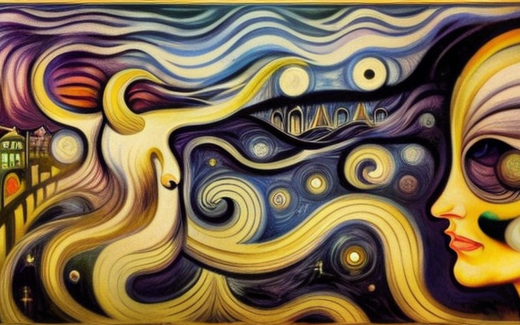
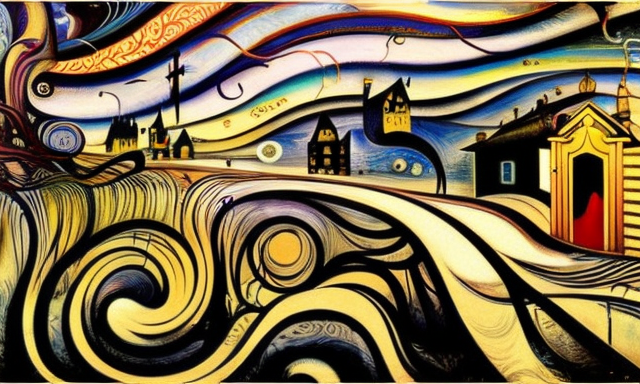
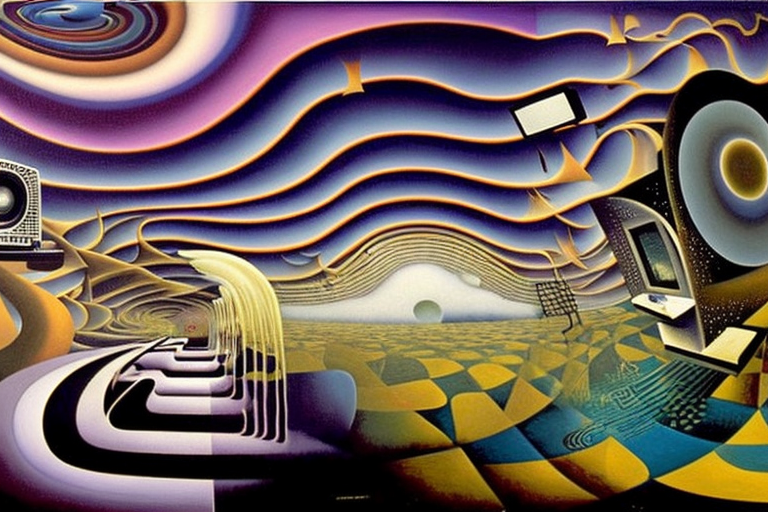
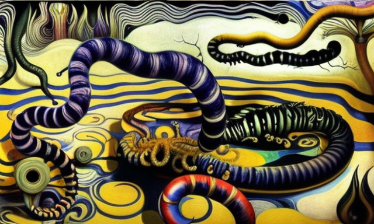

Τα απατεντάριστα εγκεφαλικά κύματα και η τηλεόραση
Αρχική Σελίδα
Πίνακας Περιεχομένων
Η δύναμη των εγκεφαλικών κυμάτων

Μια φορά κι έναν καιρό, ζούσε ένας άντρας ονόματι Ιανός. Ήταν ένας απλός άνθρωπος με απλές επιθυμίες, αλλά τα εγκεφαλικά του κύματα ήταν μοναδικά. Ήταν τόσο ισχυρά που οι αρχές θεώρησαν σκόπιμο να τα κατοχυρώσουν με πατέντα, έτσι ώστε μόνο οι λίγοι εκλεκτοί μπορούσαν να τα δημιουργήσουν.
Ο Ιανός δεν γνώριζε την πραγματική δύναμη των εγκεφαλικών του κυμάτων, αλλά σύντομα την ανακάλυψε. Καθώς περπατούσε ανέμελος στην καθημερινότητά του, άρχισε να παρατηρεί περίεργα πράγματα να συμβαίνουν γύρω του. Τα αντικείμενα κινούνταν απο μόνα τους και άκουγε ψίθυρους απ ́τον άνεμο, που φώναζαν το όνομά του.
Στην αρχή, ο Ιανός φοβόταν. Νόμιζε ότι τρελαινόταν, αλλά καθώς συνεχίζονταν τα περίεργα περιστατικά, κατάλαβε ότι τα εγκεφαλικά του κύματα ήταν η αιτία. Οι αρχές, κρατούσαν την πατέντα στα εγκεφαλικά του κύματα, και την χρησιμοποιούσαν προς ιδίον όφελος.
Ο Ιανός ήταν ευρηματικός άνθρωπος και ήξερε ότι έπρεπε να αναλάβει δράση. Ξεκίνησε ένα ταξίδι για να βρει την πηγή της δύναμης των αρχών και να πάρει ξανά τον έλεγχο των εγκεφαλικών του κυμάτων. Ταξίδεψε μέσα από σκοτεινά δάση, σε ύπουλα βουνά, ακόμη και στην καρδιά της πόλης όπου διέμεναν οι αρχές.
Τελικά, ο Ιανός έφτασε στον προορισμό του και αντιμετώπισε τις αρχές. Ήταν μια ομάδα από σκοτεινές, δυσοίωνες φιγούρες, και υψώνονταν απάνω του, με τα μάτια τους γεμάτα κακία. Αλλά ο Ιανός δεν φοβήθηκε. Στάθηκε στο ύψος του και με μια φωνή που τάραξε τα ίδια τα θεμέλια της πόλης, απαίτησε να απελευθερώσουν τα εγκεφαλικά του κύματα από τα χέρια τους.
Οι αρχές γέλασαν και είπαν στον Ιανό ότι τα εγκεφαλικά του κύματα ήταν πολύ δυνατά για να τα ελέγξει. Τον προειδοποίησαν ότι αν προσπαθήσει να τα πάρει πίσω, οι συνέπειες θα ήταν τρομερές. Ιανός όμως ήταν αποφασισμένος. Έκλεισε τα μάτια του, εστίασε το μυαλό του και με όλη τη δύναμη των πατενταρισμένων εγκεφαλικών κυμάτων του, εξαπέλυσε μια καταιγίδα ενέργειας που κυμάτισε την πόλη, γκρεμίζοντας κτίρια και αναταράζοντας την ίδια τη γη.
Οι αρχές υποχώρησαν απο τα εγκεφαλικά κύματα του Ιανού και σύντομα ηττήθηκαν. Ο Ιανός διεκδίκησε ξανά τον έλεγχο του μυαλού του και τελικά τα ελεύθερωσε. Από εκείνη την ημέρα, ο Ιανός ταξίδευε σε όλο τον κόσμο, διαδίδοντας τη δύναμη των εγκεφαλικών του κυμάτων και διδάσκοντας τους άλλους να ελέγχουν το μυαλό τους. Και ο κόσμος χάρηκε, γιατί δεν ήταν πια υπό τον έλεγχο των σκληρών και άδικων αρχών.
Η αντίσταση των μη κατοχυρωμένων εγκεφαλικών κυμάτων

Τα εγκεφαλικά κύματα του Ιανός χρησιμοποιούταν ως βιομηχανικό όχημα κατεδαφίσεων. Με μια μόνο σκέψη, μπορούσε να γκρεμίσει ολόκληρα κτίρια και οι αρχές το είδαν αυτό ως πολύτιμο βιομηχανικό εργαλείο. Χρησιμοποιούσαν τα εγκεφαλικά κύματα του Ιανού ως κατεδαφιστή, γκρεμίζοντας παλιές δομές και διανοίγοντας χώρο για νέες.
Όμως, υπήρχαν άλλοι στον κόσμο που είχαν όμοια εγκεφαλικά κύματα του Ιανού, και δεν ήταν ευχαριστημένοι που έμεναν αχρησιμοποίητα. Αυτά τα απατεντάριστα εγκεφαλικά κύματα δεν θεωρούνταν τίποτα παραπάνω από παρασιτοκτόνα αλόγων, πέρα για πέρα άχρηστα πέρα της εκκαθάρισης παράσιτων από τους ίππους ξενιστές τους.
Ο Ιανός άρχισε να ανακαλύπτει ότι δεν δημιουργήθηκαν όλα τα εγκεφαλικά κύματα ίσα. Κάποια ήταν δυνατά, όπως τα δικά του, και μπορούσαν να χρησιμοποιηθούν για σπουδαία πράγματα, όπως το γκρέμισμα σπιτιών με μια μόνο σκέψη. Αλλά ήταν αδύναμα, όπως τα απατεντάριστα εγκεφαλικά κύματα του κοινού λαού, χρήσιμα μόνο για τις πιο συνηθισμένες εργασίες, όπως η αφαίρεση των ενοχλητικών παρασίτων από τα άλογα.
Τα απατεντάριστα εγκεφαλικά κύματα κέντρισαν την προσοχή του Ιανού και αποφάσισε να μάθει περισσότερα για αυτά. Συναντήθηκε με τους εκτροφείς αλόγων της χώρας και ανακάλυψε ότι τα απατεντάριστα κύματα ήταν πράγματι χρήσιμα για την αφαίρεση παρασίτων από τα άλογα, αλλά μόνο στοιχειωδώς.
Οι κτηνοτρόφοι είπαν στον Ιανός ότι τα απατεντάριστα εγκεφαλικά κύματα δεν ήταν αρκετά ισχυρά ώστε να έχουν πραγματικό αντίκτυπο στα άλογα. Μπορούσαν να αφαιρέσουν τα παράσιτα, αλλά μόνο με μεγάλη δυσκολία και με πολλές ώρες κουραστική προσπάθεια. Ήταν μια αργή και επίπονη διαδικασία, χωρίς πραγματική ανταμοιβή για την προσπάθεια.
Τα απατεντάριστα εγκεφαλικά κύματα ζήλεψαν τα κατοχυρωμένα με πατέντα εγκεφαλικά κύματα του Ιανού, και ενώθηκαν όλα μαζί, αποφασισμένα να αποδείξουν τις πραγματικές τους δυνατότητες. Άρχισαν να χρησιμοποιούν τα εγκεφαλικά τους κύματα για μικρές πράξεις εξέγερσης, μετακινούσαν βουνά, άλλαζαν τη ροή των ποταμών, γκρέμιζαν φράχτες και προκαλούσαν χάος στους δρόμους.
Οι αρχές το παρατήρησαν και θεώρησαν τα απατεντάριστα εγκεφαλικά κύματα ως απειλή για τη δύναμή τους. Προσπάθησαν να τα καταστείλουν, αλλά τα εγκεφαλικά κύματα αποδείχθηκαν πολύ ισχυρά και συνέχισαν να προκαλούν χάος και καταστροφή στο πέρασμά τους.
Η αύξηση των επεισοδίων
Καλησπέρα, είμαι ο αγαπημένος σας τηλεπαρουσιαστής, και αυτή είναι μια έκτακτη είδηση για την αυξανόμενη ανησυχία σχετικά με τη χρήση απατεντάριστων εγκεφαλικών κυμάτων.
Όπως έχουμε αναφέρει, υπάρχει ένας αυξανόμενος αριθμός ατόμων που διαθέτουν εγκεφαλικά κύματα που δεν είναι επίσημα αναγνωρισμένα ή κατοχυρωμένα από τις αρχές. Αυτά τα απατεντάριστα εγκεφαλικά κύματα χρησιμοποιούνται παραδοσιακά για έναν μοναδικό σκοπό, ως αποπαρασιτωτές αλόγων.
Ωστόσο, έχουν αυξηθεί τα περιστατικά απατεντάριστων εγκεφαλικών κυμάτων που προκαλούν χάος στους δρόμους. Οι αναφορές αυτόπτων μαρτύρων αναφέρουν ότι φράχτες κατέρρευσαν, λάμπες στους δρόμους τρεμοπαίζουν, ακόμη και μικρές φωτιές ξέσπασαν.
Φαίνεται ότι αυτά τα απατεντάριστα εγκεφαλικά κύματα δεν είναι ικανοποιημένα με τον ρόλο τους ως παρασιτοκτόνα αλόγων και επιδιώκουν να αποδείξουν την αξία τους με άλλους, πιο καταστροφικούς τρόπους.
Έχει εγείρει ανησυχίες μεταξύ των αρχών, οι οποίες τώρα ερευνούν τα περιστατικά και προσπαθούν να προσδιορίσουν την πηγή αυτών των απατεντάριστων εγκεφαλικών κυμάτων. Οι αξιωματούχοι προειδοποιούν το κοινό να είναι προσεκτικό, καθώς δεν μπορούν να εγγυηθούν την ασφάλεια όσων βρίσκονται κοντά σε αυτά τα εγκεφαλικά κύματα όταν αυτά χρησιμοποιούνται.
Ως αποτέλεσμα αυτών των περιστατικών, υπήρξαν εκκλήσεις για αυστηρότερους κανονισμούς και έλεγχο της χρήσης εγκεφαλικών κυμάτων. Κάποιοι υποστηρίζουν ότι όσοι έχουν απατεντάριστα εγκεφαλικά κύματα θα πρέπει να είναι ικανοποιημένοι με τον ρόλο τους ως παρασιτοκτόνα και απαγορεύεται αυστηρά κάθε προσπάθεια χρήσης των δυνάμεών τους για άλλους σκοπούς.
Αυτές οι εξελίξεις έχουν πυροδοτήσει μια έντονη συζήτηση σχετικά με τον ρόλο και τον σκοπό των εγκεφαλικών κυμάτων χωρίς πατέντα. Από τη μία πλευρά, υπάρχουν εκείνοι που υποστηρίζουν ότι αυτά τα εγκεφαλικά κύματα έχουν τη δυνατότητα να είναι ένα ισχυρό προοδευτικό εργαλείο και δεν πρέπει να περιορίζονται στη χρήση τους. Από την άλλη πλευρά, υπάρχουν και εκείνοι που πιστεύουν ότι τα περιστατικά χάους στους δρόμους αναδεικνύουν την ανάγκη για αυστηρότερο έλεγχο της χρήσης αυτών των εγκεφαλικών κυμάτων.
Η προπαγάνδα της τηλεόρασης

Σας χαιρετώ, είμαι ο τηλεπαρουσιαστής των βραδινών ειδήσεων και σας φέρνω ένα υπέροχο νέο! Οι αρχές βρήκαν έναν τρόπο να σταματήσουν τα απατεντάριστα εγκεφαλικά κύματα από το να προκαλούν χάος στο δρόμο.
Θυμάστε, αναφέραμε πως τα εγκεφαλικά κύματα που δεν εγκρίθηκαν από τις έμπιστες αρχές και προκαλούσαν μεγάλα προβλήματα στους ανθρώπους γύρω. Τώρα, όμως, φαίνεται ότι η λύση βρέθηκε. Οι αρχές χρησιμοποιούν τη δύναμη των τηλεοπτικών ειδήσεων και εκπομπών για να σταματήσουν κάθε δραστηριότητα απατενταριστων εγκεφαλικών κυμάτων.
Η διαδικασία έχει ως εξής, εκπέμπουν οι αρχές ειδικά σήματα μέσω της τηλεόρασης που ηρεμούν τα μη πατενταρισμένα εγκεφαλικά κύματα, εμποδίζοντάς τα να προκαλέσουν περαιτέρω καταστροφή. Τα αποτελέσματα φαίνονται πλήρως αποτελεσματικά! Οι φράχτες δεν καταρρέουν πλέον, οι λαμπτήρες στους δρόμους παραμένουν αναμμένοι και πυρκαγιές δεν ανάβουν πια. Οι δρόμοι είναι και πάλι ασφαλείς για να περπατήσουν όλοι.
Ωστόσο, αυτή η λύση δεν είναι χωρίς τους επικριτές της. Κάποιοι υποστηρίζουν ότι η χρήση της τηλεόρασης για τον έλεγχο των εγκεφαλικών κυμάτων αποτελεί παραβίαση της ατομικής ελευθερίας και θα μπορούσε να χρησιμοποιηθεί ως εργαλείο καταπίεσης. Ωστόσο, οι αρχές έχουν καθησυχάσει το κοινό ότι η λύση είναι προσωρινή και ότι θα χρησιμοποιηθεί μόνο σε ακραίες περιπτώσεις, ώστε για να αποφευχθεί το χάος στους δρόμους.
Τελικά, φαίνεται ότι τα απατεντάριστα εγκεφαλικά κύματα περιορίστηκαν με επιτυχία και οι αρχές μπορούν τώρα να επιστρέψουν στην εστίασή τους στην προώθηση των κατοχυρωμένων με πατέντα εγκεφαλικών κυμάτων για τον σκοπό τους. Αυτά τα πατενταρισμένα εγκεφαλικά κύματα, όπως θυμάστε, έχουν αποδειχθεί ότι τα καλύτερα για κατεδάφιση σπιτιών, και με τα απατεντάριστα εγκεφαλικά κύματα να μην προκαλούν πλέον χάος, οι αρχές μπορούν να επικεντρωθούν στην προώθηση αυτής της βιομηχανίας απο εδώ και στο εξής.
Διαφορές μεταξύ ανθρώπου και αλόγου

Γεια σας και πάλι, είμαι ο τηλεπαρουσιαστής έκτακτων ειδήσεων και σας μεταδίδω περισσότερα νέα! Αυτή τη φορά, μιλάμε για το μέλλον των απατεντάριστων και μη εξουσιοδοτημένων εγκεφαλικών κυμάτων.
Όπως γνωρίζετε, οι αρχές βρήκαν μια λύση στο πρόβλημα που προκαλείται από απατεντάριστα εγκεφαλικά κύματα και τα εμπόδισαν να προκαλούν χάος στους δρόμους. Ωστόσο, παρέμειναν ακόμα κάποια απατεντάριστα εγκεφαλικά κύματα εκεί έξω και οι αρχές έχουν ένα μήνυμα για αυτά.
Θέλουν να υπενθυμίσουν στα απατεντάριστα εγκεφαλικά κύματα ότι ο σκοπός πάντοτε ήταν να απομακρύνουν τα παράσιτα από τα άλογα. Και σε αυτό πρέπει να επικεντρωθούν. Με τα κατοχυρωμένα με πατέντα εγκεφαλικά κύματα να χρησιμοποιούνται τώρα για κατεδάφιση σπιτιών, τα απατεντάριστα εγκεφαλικά κύματα μπορούν να επιστρέψουν στον αρχικό τους σκοπό και να βοηθήσουν να διατηρηθούν τα άλογα υγιή και δυνατά.
Επιτρέψτε μου να σας πω, τα απατεντάριστα εγκεφαλικά κύματα είναι άριστα στην απομάκρυνση παρασίτων από τα άλογα. Είναι σαν ένα μαγικό ξόρκι, που μόλις γίνει, θα εξαφανίσει τα παράσιτα. Η διαδικασία είναι απλή. Τα απατεντάριστα εγκεφαλικά κύματα κατευθύνονται προς το άλογο και τα παράσιτα μέσα στο σώμα του αλόγου αφαιρούνται και εξαλείφονται. Το άλογο στη συνέχεια αφήνεται υγιές και απαλλαγμένο από παράσιτα. Επίσης να σας πληροφορήσω, τα άλογα ευγνωμονούν για τη βοήθεια.
Η χρήση απατεντάριστων κυμάτων έχει εγκωμιαστεί από ιδιοκτήτες αλόγων και εκπαιδευτές, οι οποίοι λένε ότι είναι μια πολύ πιο ασφαλής και αποτελεσματική μέθοδος ελέγχου των παρασίτων σε σύγκριση με τις παραδοσιακές μεθόδους. Και, όπως γνωρίζετε, τα χαρούμενα άλογα κάνουν χαρούμενους αναβάτες.
Ας γιορτάσουμε λοιπόν τα απατεντάριστα εγκεφαλικά κύματα και τον ρόλο τους στη διατήρηση της υγείας και της ευτυχίας των αλόγων. Και ποιος ξέρει, ίσως στο μέλλον να βρουν έναν άλλο σημαντικό ρόλο στον κόσμο.